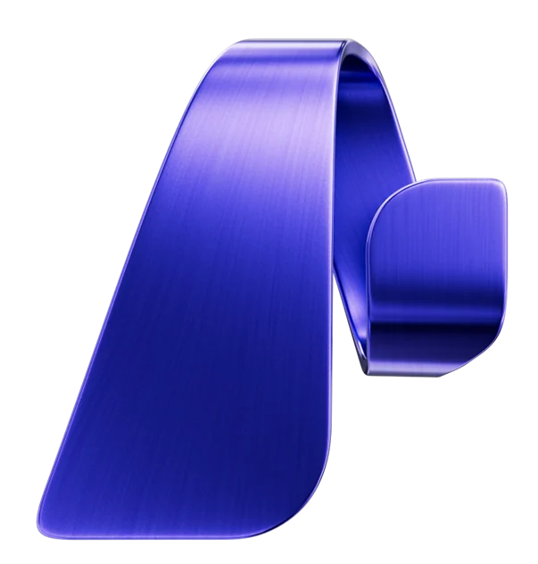

<section class="frag frag--dark frag--center tc" style="background:#000">
  
  <h1 class="ftitle" style="color:#d671e8;font-size:clamp(34px,5vw,64px)">Microsoft Foundry</h1>
  <p class="fsub" style="color:#fff;font-weight:500;margin-top:4px">The AI app and agent factory</p>
</section>
